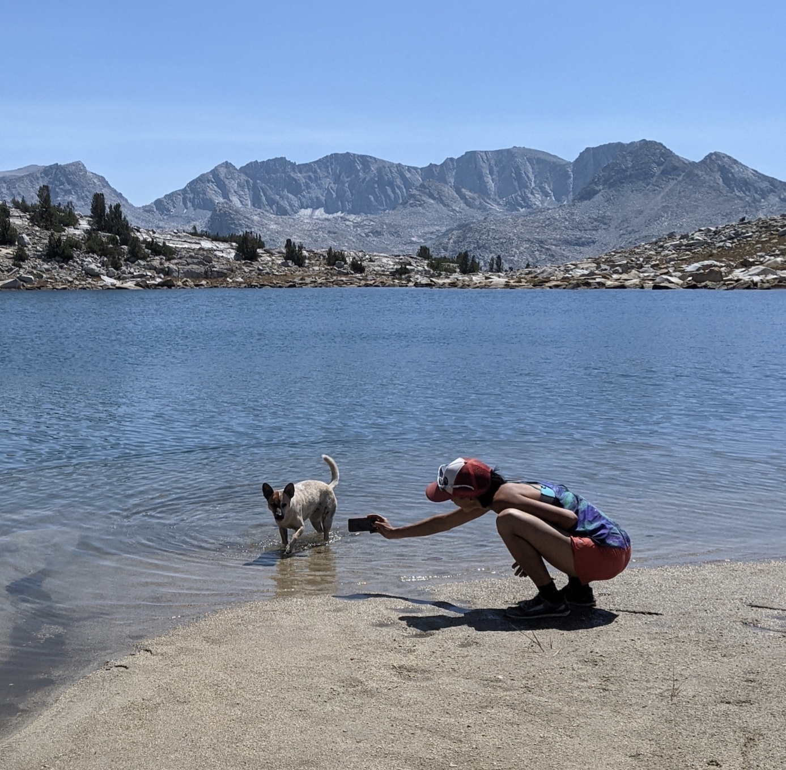

Pilot Knob (12,245 ft)
There was a lot of smoke lately, but it cleared up in time for a Sunday peak! This was going to be Mica’s longest hike yet, and daiyi’s second time up Paiute Pass Trail this season (1.5 weeks ago to climb Emerson). Long and good day out with friends.
- Trailhead: North Lake Hiker Parking (37.230580, -118.618835), or the overflow up the road. Many stern warnings against day parking at North Lake Campground.
- Route: Paiute Pass to East Ridge
- Total distance: 22.5 miles, 5,242 ft gain
- 14.2 miles and 3,047 ft gain on trail
- 8.4 miles and 2,155 ft gain cross-country
- Time car-to-car: 12 hours
- Good for dogs? Long but great terrain. Last 100 vertical feet is tricky routefinding for dogs
Paiute Pass to East Ridge of Pilot Knob. gpx.
>Mica’s trip report
Hi, I’m Mica, I’m a dog. Today I hike my 12th SPS, which stands for Sierra Pup Summits ;D
Some shenanigans at the start of the day. As we drive to the trailhead my friend Spot texts us that their home got broken into by a human over night and they were 30 minutes late to meet us. The decision-making and communication were rushed, so we end up starting without them a bit past 8am, thinking they would be fast and catch.
We pull over after 1 hour 45 min at the beach at Paiute Lake, seeing if Spot and company would catch up.
After 30 minutes they hadn’t arrived, so we continue. The humans sound worried, but I knew Spot is great at hiking!
At Paiute Pass we have a big view of the trail, and Yelly spies a white dot that could be a dog. Soon Spot is here, with his people Lucas and Jaymie close behind!
The humans sound excited and relieved, and resolve to call each other to hash out specifics in the future. I don’t know how to use a phone, I’m a dog!
7 miles into the hike, Spot’s humans Jaymie and Lucas are ready to turn around. It’s been a rough morning for them with the break-in. We have a big group hug, I give Spot a goodbye lick, and we head northwest off the trail to start the big cross-country part of the day.
It’s super hot and my tongue is dragging on the floor. We pass by some streams on the map but they’re dry, because it’s late season. Luckily there’s a lot of little run-offs as we do the long, lumpy traverse of Humphreys Basin. I go for a swim every opportunity I can!
The humans find a running stream and fill up on water, treating with tablets. I can drink anything, I’m a dog!


Stephanie is satisfied with how far she’s come, so she finds a shady rock to camp out under while the rest of us continue. daiyi gives her a foam sitting pad they found on the ground earlier!
The first part of the slopes is sandy scree and small talus, which is easy for dogs. The last hundred feet of gain to the top gets trickier. It’s definitely possible for a dog, but keeping it class 2 is not always obvious. I’m lucky to have daiyi and Yelly working together to help me find the best way up.

It’s still hot! I’m panting up a storm and Yelly shares some of her funky tube water.

Our long day is only halfway done! The way down is much easier for me than the way up, because we drop on the slope earlier instead of following the ridge like we did on the way up. Soon we reunite with Stephanie, who looks very happily rested. Now we have 4 miles of cross-country back to the trail.
We’re all really feeling the small ups and downs on the remaining cross-country. Daiyi has had holes in their shoes for the last couple of hikes and it makes their soles sore. I’m a dog, I don’t wear shoes! My toe beans were definitely getting a little beat, I shed a bit of top skin and had some rubbing, but no lost toe nails or blisters :D
Just 7 miles of Paiute Pass trail left, which goes by much quicker. I’m getting tired, and sticking to the heels of my human friends.
Although I somehow still have energy to chase one last squirrel! I almost get it this time but it tricks me by standing very very still.
It’s much cooler now, but I still go for a swim in the ponds between Paiute Pass and Loch Leven.

We wind through the forest at sunset, and make it to the dirt road just as it’s too dark to see! No headlamps! It’s 8pm, which makes our dayhike a total of 12 hours. I jump into the EV and immediately curl up into a donut. We drive down to Bishop, and I inhale kibble and water in the car and go back to sleep while the humans meet up with Astro Ben at Mountain Rambler for dinner.
I’m totally passed out for the whole ride back to Mammoth.

It was my longest hike yet for my 12th SPS! And then I slept for two whole days.
Comments
No comments at the moment. Hey, you could write one \o/